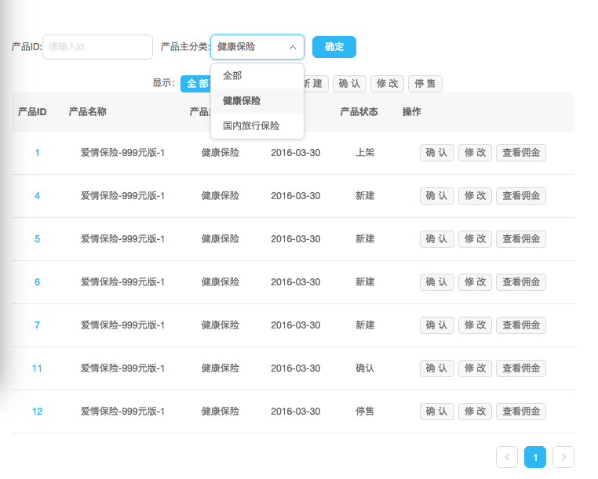

目标
最近在cms系统中使用了redux，由于系统主要用于产品的编辑配置，用户交互比较多，store承载的数据量比较大，采用了reselect。
使用reselect出于以下两点考虑：
- 优化性能
如果有从state中大量计算衍生数据的需求，即父组件state通过计算作为props传递给子组件，那么state的任何变化都会引起重新计算。
通过reselect可以创建带有记忆的selector，只有相关属性变化了才去重新计算衍生数据. - 代码组织
通过reselect创建了数据处理抽象层,专门处理state到子组件的映射。
官方对reselect的说明：
- Selectors can compute derived data, allowing Redux to store the minimal possible state.
- Selectors are efficient. A selector is not recomputed unless one of its arguments change.
- Selectors are composable. They can be used as input to other selectors.
使用selector可以提高react和redux的性能
react本身是基于虚拟节点diff来更新相应ui，没有dom的增删改查，性能已经相当好了。为了组件的更新及时反映在屏幕上，react都要重新执行渲染周期，但是随着ui复杂度的逐渐提升，过多的更新也会成为性能杀手。react也提供了componentShouldUpdate，在此方法内将上一个props、state和新的props、state作对比，去决定是否去执行更新，PureRenderMixin也是在基础上实现的。
如果子组件的props是父组件通过计算后传递下去的，每当父组件更新，那么要重新计算。可以使用reselect省去没必要的重新计算.
reselectAPI
createSelector
createSelector(…inputSelectors | [inputSelectors], resultFunc)
- 参数
inputSelectors可是逗号分隔的selectors，也可是由selectors组成的数组，每当state变化了，就会执行selectors定义的计算，计算结果作为resultFunc的参数。 resultFunc也就是转换函数
主要流程：如果state tree的改变会引起inputselectors值变化，那么selector会调用转换函数，传入inputselectors作为参数，并返回结果。如果inputSelectors的值和前一次的一样，它将会直接返回前一次计算的数据，而不会再调用一次转换函数。1234567891011121314const mySelector = createSelector(state => state.values.value1,state => state.values.value2,(value1, value2) => value1 + value2)// You can also pass an array of selectorsconst totalSelector = createSelector([state => state.values.value1,state => state.values.value2],(value1, value2) => value1 + value2)createSelector内部，默认通过===比较判断，由inputSelector选择的值和上一次的值有无变化，所以inputSelectors的参数要是immutable的。createSelector源码如下，可知createSelector是由createSelectorCreator指定了默认比较函数创建的偏函数。1export const createSelector = createSelectorCreator(defaultMemoize)通过
createSelector创建的selector缓存大小为1，也就说当参数中任意inputSelectors的返回值变化了，结果都会重新计算。
defaultMemoize
defaultMemoize(func, equalityCheck = defaultEqualityCheck)
- 如果不指定比较函数，那么使用
defaultEqualityCheck，createSelector默认使用的缓存函数。defaultMemoize的缓存大小为1，当任意参数的变化了会重新执行计算。 equalityCheck是用来决定参数是否变化的辅助函数
123function defaultEqualityCheck(a, b) {return a === b}
createSelectorCreator
createSelectorCreator(memoize, …memoizeOptions)
- 此方法是
createSelector的自定义版本，memoize是自定义的记忆函数，用来替换defaultMemoize ...memoizeOptions是额外的参数，会被传递给记忆函数。记忆函数的第一个参数是resultFunc。
看源码更容易理解123456789101112131415161718192021222324252627export function createSelectorCreator(memoize, ...memoizeOptions) {return (...funcs) => {let recomputations = 0const resultFunc = funcs.pop()const dependencies = getDependencies(funcs)const memoizedResultFunc = memoize((...args) => {recomputations++return resultFunc(...args)},...memoizeOptions)const selector = (state, props, ...args) => {const params = dependencies.map(dependency => dependency(state, props, ...args))return memoizedResultFunc(...params)}selector.resultFunc = resultFuncselector.recomputations = () => recomputationsselector.resetRecomputations = () => recomputations = 0return selector}}
createStructuredSelector
createStructuredSelector({inputSelectors}, selectorCreator = createSelector)
例子
比如有个列表

引入相应的函数
创建2个selector
使用lodash.isEqual比较函数代替默认的===比较，还是使用默认的defaultMemoize，只是加上了额外的参数lodash.isEqual。
|
|
在mapStateToProps返回一个映射对象，为子组件准备适合自己需要的状态视图。
|
|
在render中将visiblePros传给子组件
只有当决定子组件props的prosSelector，filterSelector任一返回值和上次不相同了，selectPros的回调函数才会执行，visiblePros才会更新，才会触发子组件ProductLists的react渲染周期，而在其它部分（非相关）变化时不做计算
在实际项目中，可以组合使用selectors，带来的优点的让代码组织非常清晰。
参考：
https://github.com/reactjs/reselect
http://redux.js.org/docs/recipes/ComputingDerivedData.html